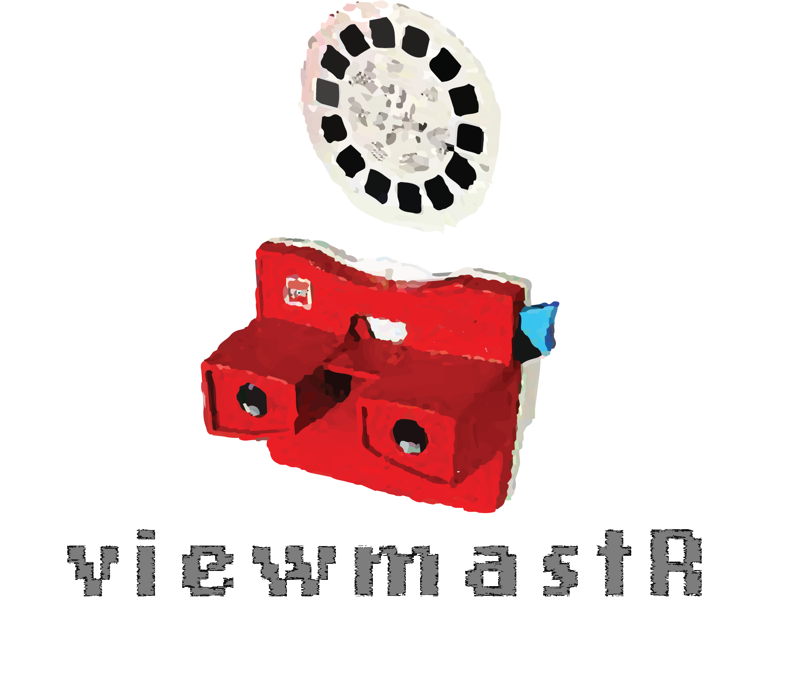

viewmastR is a R framework for genomic cell type classification using the Burn machine learning library and its modules. viewmastR is a very flexible and customizable platform for labelling cell types in your data
The main features of viewmastR are:
- Use a blazingly fast machine learning approach to cell classification according to a reference dataset
- Augment data for rare cell types
- Classify single cell profiles according to a reference of bulk data
Installation
First you need to have an updated Rust installation. Go to this site to learn how to install Rust.
To install development version of viewmastR:
remotes::install_github("furlan-lab/viewmastR")How to start
We have a few vignettes for
-
vignette("HowTo")to explore the basics of the package. -
vignette("Augment")to explore data augmentation -
vignette("BulkClassify")to see how to use a bulk dataset to classify single-cell profiles